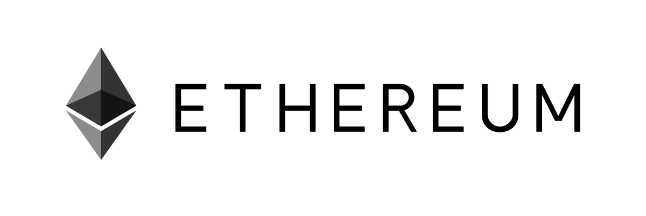
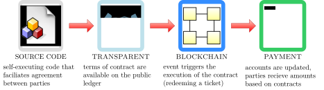
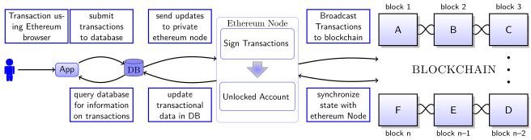

<!DOCTYPE html>

<html lang="en-US">

<head>

<meta charset="UTF-8" />

<meta name="author" content="David Li" />

<meta name="generator" content="LaTeX lwarp package" />

<meta name="description" content="A list of cheatsheets for courses at the University of Victoria" />

<meta name="viewport" content="width=device-width, initial-scale=1.0" />

<!-[if lt IE 9]>

<script src="http://html5shiv.googlecode.com/svn/trunk/html5.js"></script>

<![endif]->

<title>Block Chain Notes</title>

<link rel="stylesheet" type="text/css" href="lwarp.css" />


<!-- https://groups.google.com/forum/#!topic/
                                            mathjax-users/jUtewUcE2bY -->
<script type="text/x-mathjax-config">
MathJax.Hub.Register.StartupHook("TeX AMSmath Ready",function () {
      var seteqsectionDefault = {name: "", num: 0};
      var seteqsections = {}, seteqsection = seteqsectionDefault;
      var TEX = MathJax.InputJax.TeX, PARSE = TEX.Parse;
      var AMS = MathJax.Extension["TeX/AMSmath"];
      TEX.Definitions.Add({
      macros: {
            seteqsection: "mySection",
            seteqnumber: "mySetEqNumber"
      }
      });


      PARSE.Augment({
      mySection: function (name) {
            seteqsection.num = AMS.number;
            var n = this.GetArgument(name);
            if (n === "") {
            seteqsection = seteqsectionDefault;
            } else {
            if (!seteqsections["_"+n])
                   seteqsections["_"+n] = {name:n, num:0};
            seteqsection = seteqsections["_"+n];
            }
            AMS.number = seteqsection.num;
      },
      mySetEqNumber: function (name) {
            var n = this.GetArgument(name);
            if (!n || !n.match(/^ *[0-9]+ *$/))
                n = ""; else n = parseInt(n)-1;
            <!-- $ syntax highlighting -->
            if (n === "" || n < 1)
                   TEX.Error
                   ("Argument to "+name+" should be a positive integer");
            AMS.number = n;
      }
      });
      MathJax.Hub.Config({
      TeX: {
            equationNumbers: {
            formatTag: function (n)
                   {return "("+(seteqsection.name+"."+n).replace(/^\./,"")+")"},
            formatID: function (n) {
                   n = (seteqsection.name+’.’+n).replace
                       (/[:"’<>&]/g,"").replace(/^\./,"");
                   return ’mjx-eqn-’ + n;
            }
            }
      }
      });
});
</script>


<!-- http://docs.mathjax.org/en/latest/options/ThirdParty.html -->
<script type="text/x-mathjax-config">
  MathJax.Ajax.config.path["Contrib"] =
      "https://cdn.mathjax.org/mathjax/contrib";
</script>


<!-- https://github.com/burnpanck/MathJax-siunitx -->


<script type="text/x-mathjax-config">
 MathJax.Hub.Config({
    extensions: ["tex2jax.js","[siunitx]/siunitx.js"],
    jax: ["input/TeX","output/HTML-CSS"],
    tex2jax: {
            inlineMath: [["$","$"],["\\(","\\)"]] ,
            processClass: "tabbing|verse"
      },
    TeX: {extensions: ["AMSmath.js","AMSsymbols.js", "sinuitx.js"]}
 });
 MathJax.Ajax.config.path[’siunitx’]                = ’http://rawgit.com/burnpanck/MathJax-siunitx/master/’;
 </script>


<script type="text/x-mathjax-config">
MathJax.Hub.Config({
      TeX: {
      equationNumbers: {
            autoNumber: "AMS"
      }
      }
});
</script>


<!-- Alternative CDN provider: -->
<script type="text/javascript" async
src="https://cdnjs.cloudflare.com/ajax/libs/mathjax/2.7.1/MathJax.js?config=TeX-AMS_HTML-full">
</script>


<!-- No longer supported after April 30, 2017: -->
<!--
<script
  src="https://cdn.mathjax.org/mathjax/latest/MathJax.js?config=TeX-AMS_HTML-full">
</script>
-->


</head>
<body>
<header>


<p>CheatSheets <span class="fbox" style="border:1pt solid black ; padding:3pt">
<a href="Images/Ethereum-Cover.png" target="_blank"
></a></span></p>


</header>
<section class="textbody">

<!-Nullify \ensuremath for MathJax:->

\(\newcommand \ensuremath [1]{#1}\)

<!-Additional customizations for MathJax:->
<pre class="verbatim" >
 940 Blanshard Street
 Victoria, British Columbia
 V8W 3E6
 Susan Fiddler
 Co-op Coordinator
 Faculty of Engineering
 University of Victoria
 P.O. Box 1700
 Victoria, B.C.
 V8W 2Y2

 Dear Susan,

 Please accept the accompanying Work Term Report entitled "Determining uses of JIRA and Confluence at OFI IBM."

 This report is the result of work completed at the SOME GENEriC ORGANIZATION. During my first work
 term as a University of Victoria student, I used charts and tables to display information about issue, complied documentation for critical applications in a wiki and re-
searched add-ons to extend functionality. In the course of work, I gained exposure to a technical environment, and learned how software can integrate to-
gether.

 Through the course of the term, I was given the opportunity to learn much agile software development, testing applications, and software products. I feel that this knowl-
edge will be helpful in future work terms, and in my career.

 I would like to thank my manager, MISTER MAN, for his patience and good judgement, as well as
 the RANDOM FOLK who were always willing to help.
 Sincerely,

 David Li

</pre>
<h4 id="autosec-3"> </h4><a id="autopage-3"></a>
<h4 id="autosec-4"> Table of Contents</h4><a id="autopage-4"></a>

<nav class="toc">
<p><a href="index.html#autosec-5" class="tocsection"
>List of Figures</a></p>

<p><a href="index.html#autosec-7" class="tocsection"
>List of Tables</a></p>

<p><a href="index.html#autosec-8" class="tocsection"
>Summary</a></p>

<p><a href="index.html#autosec-1" class="tocsection"
>Glossary</a></p>

<p><a href="index.html#autosec-2" class="tocsection"
><span class="sectionnumber">1</span>&#x2001;Introduction</a></p>

<p><a href="index.html#autosec-3" class="tocsubsection"
><span class="sectionnumber">1.1</span>&#x2001;Overview</a></p>

<p><a href="index.html#autosec-8" class="tocsubsection"
><span class="sectionnumber">1.2</span>&#x2001;Decentralized Applications</a></p>

<p><a href="index.html#autosec-12" class="tocsubsection"
><span class="sectionnumber">1.3</span>&#x2001;Smart Contracts</a></p>

<p><a href="index.html#autosec-14" class="tocsection"
><span class="sectionnumber">2</span>&#x2001;Discussion</a></p>

<p><a href="index.html#autosec-17" class="tocsection"
><span class="sectionnumber">3</span>&#x2001;Conclusion</a></p>

<p><a href="index.html#autosec-18" class="tocsection"
><span class="sectionnumber">4</span>&#x2001;Recommendations</a></p>

<p><a href="index.html#autosec-19" class="tocsection"
><span class="sectionnumber">5</span>&#x2001;References</a></p>

<p><a href="index.html#autosec-22" class="tocsection"
>Appendix <span class="sectionnumber">A</span>&#x2001;Code Listings</a></p>

</nav>
<h4 id="autosec-5"> List of Figures</h4><a id="autopage-5"></a>

<nav class="lof">

<p><a href="index.html#autoid-2" class="tocfigure"
><span class="sectionnumber">1</span>&#x2001;Illustrating how a smart contract works</a></p>


<p><a href="index.html#autoid-3" class="tocfigure"
><span class="sectionnumber">2</span>&#x2001;An example of server-blockchain architecture in a DAPP.</a></p>


</nav>
<h4 id="autosec-6"> </h4><a id="autopage-6"></a>
<h4 id="autosec-7"> List of Tables</h4><a id="autopage-7"></a>

<nav class="lot">

<p><a href="index.html#autoid-1" class="toctable"
><span class="sectionnumber">1</span>&#x2001;Timeline of Cryptocurrency</a></p>


<p><a href="index.html#autoid-4" class="toctable"
><span class="sectionnumber">2</span>&#x2001;My caption</a></p>


</nav>
<h4 id="autosec-8"> Summary </h4><a id="autopage-8"></a>
<h4 id="autosec-9"> </h4><a id="autopage-9"></a>
<h4 id="autosec-10"> Glossary</h4><a id="autopage-10"></a>
<p><b>blockchain</b> A blockchain is a digitized, decentralized, public ledger of all cryptocurrency transactions. </p>


<p><b>Dapp</b> Decentralized Application have backend code running on a decentralized peer-to-peer network and not controlled by a single entity. In a decentralized application transactions are versified through consensus of multiple
         users.</p>


<p><b>Ethereum</b> an open software platform based on blockchain technology that enables developers to build and deploy decentralized applications </p>


<p><b>HyperLedger</b> group of open-source blockchain technologies started by the Linux Foundation </p>

<p><b>HyperLedger Composer</b> permissioned blockchain that defines assets, business rules, and participants, and access controls for existing roles and types of transactions. </p>


<p><b>smart contract</b> computer program that directly controls transfer of digital currencies or assets under predefined conditions and used to automatic transactions on the blockchain. These transactions are trackable and irreservable.
         </p>
<h4 id="autosec-2"> <span class="sectionnumber">1&#x2001;</span>Introduction</h4><a id="autopage-2"></a>
<h5 id="autosec-3"> <span class="sectionnumber">1.1&#x2001;</span>History of Cryptocurrency</h5><a id="autopage-3"></a>
<div class="minipage" style="justify-content:flex-start ; width:414pt ; ">

<figure id="autoid-1" class="table">

<figcaption>
<p>Table 1:&nbsp;Timeline of Cryptocurrency</p>


</figcaption>
<table>

<tr>
<td class="tdc">2008</td>
<td class="tdp">

<p>Bitcoin White Paper</p>


</td>
</tr>
<tr>
<td class="tdc">2009</td>
<td class="tdp">

<p>Bitcoin Genesis Block</p>


</td>
</tr>
<tr>
<td class="tdc">2013</td>
<td class="tdp">

<p>1 BTC = &dollar; 31 USD</p>


</td>
</tr>
<tr>
<td class="tdc">2013</td>
<td class="tdp">

<p>Ethereum White Paper</p>


</td>
</tr>
<tr>
<td class="tdc">2015</td>
<td class="tdp">

<p>Ethereum Genesis Block</p>


</td>
</tr>
<tr>
<td class="tdc">2015</td>
<td class="tdp">

<p>HyperLedger starts</p>


</td>
</tr>
<tr>
<td class="tdc">2017</td>
<td class="tdp">
<p>Over 1000 different cryptocurrencies</p>


</td>
</tr>
<tr>
<td class="tdc">2018</td>
<td class="tdp">

<p>AWS Blockchain Templates</p>


</td>
</tr>
<tr>
<td class="tdc"></td>
<td class="tdp">

</td>
</tr>

</table>

</figure>

</div>
<div class="minipage" style="justify-content:flex-start ; width:501pt ; ">

<p>In 2008 bitcoin white paper [1] described a way to solve the double spending problem without a centralized body using blockchain. Although, the value of bitcoin (BTC) has grown exponentially, high computational and energy consumption in
mining and slow performance [2]. Released in July 30, 2015, Ethereum, an open-source platform based on blockchain technology, distinguishes itself from bitcoin through faster transactions, unlimited processing capability for smart contracts,
and its network is optimized to support Decentralized Application(DApp) [3].</p>


</div>
<h5 id="autosec-8"> <span class="sectionnumber">1.2&#x2001;</span>Decentralized Applications</h5><a id="autopage-8"></a>

<p>Blockchain technology is revolutionizing the internet by establishing trust in shared data. [4]. Additionally, transactions recorded on the blockchain are practically impossible to remove or change. A decentralized application, or DApp are
deployed on peer to peer networks such as Ethereum or on the cloud <sup>1</sup>. A decentralized system (peer to peer) has many advantages over a conventional centralized network including no single points of failure, cheaper distribution
(servers are expensive), faster upload speeds. </p>
<p><span class="paragraph" id="autosec-9"> Types of Blockchains</span><a id="autopage-9"></a> </p>


<ul style="list-style-type:none">

<li>
<p>— <b>Public blockchains</b> are large distributed networks that are run through a native token such as bitcoin or ether. Anyone can participate and the community maintains its open-source code. The two largest public blockchains are
Ethereum and Bitcoin.</p>

</li>
<li>
<p>— <b>Permissioned blockchains</b> define role based access control for individuals in the network and uses native tokens. HyperLedger Composer, an open-source framework for permissioned blockchains, is used for smart contracts and
for blockchain application development [5]. One use case is an accounting system that calculates payment, while hiding that information from unrelated organizations.</p>

</li>
<li>
<p>— <b>Private blockchains</b> membership is tightly controlled and lacks a native token. Useful for consortiums with trusted associates and exchanging confidential information, however, less powerful because it is supported by limited
private resources.</p>

</li>
</ul>
<p><span class="paragraph" id="autosec-10"> Public and Private Keys</span><a id="autopage-10"></a> <b>In a blockchain</b> system, any key holder can use their private key to sign a piece of data. This results in a signature. In a
Dapp, this can be used for: </p>


<ul style="list-style-type:none">

<li>
<p>1. Recovering the public key (ethereum account address) of the Author.</p>

</li>
<li>
<p>2. Verify if the raw data is the same as the one signed by Author using the public key.</p>

</li>
</ul>
<div class="footnotes">
<p><sup>1</sup>&nbsp;Amazon recently started offering blockchain templates on AWS. [3]</p>


</div>
<h5 id="autosec-12"> <span class="sectionnumber">1.3&#x2001;</span>Smart Contracts</h5><a id="autopage-12"></a>

<figure id="autoid-2" class="figure">
<div class="center">

<p>
<a href="Diagrams/smartContractsExp.svg" target="_blank"
></a></p>


<figcaption>
<p>Figure 1:&nbsp;Illustrating how a smart contract works</p>


</figcaption>

<a id="fig:smartContracts"></a>

</div>

</figure>
<h4 id="autosec-14"> <span class="sectionnumber">2&#x2001;</span>Discussion</h4><a id="autopage-14"></a>

<p>As shown in Figure <a href="index.html#fig:DApp">2</a> Dapp, a user’s transactions on the application is publicly broadcasting to the blockchain. Implementing architecture for blockchain applications</p>


<p><sup>2</sup></p>


<p>adds an third layer to the standard client-server architecture <sup>3</sup>. Disadvantages of blockchain data storage include difficult retrieving relevant information (without an abstraction layer, the entire blockchain or a single
transaction is returned), users will experience latency before transactions are validated, <sup>4</sup></p>


<p>and writing to the blockchain is relatively expensive compared to traditional systems. Usage of interfaces such as the JSON RPC and/or cloud hosting solutions serve as a abstraction layer allowing databases to load publicly available data
on the blockchain for more efficient user interactions with that information.</p>


<figure id="autoid-3" class="figure">

<p>
<a href="Diagrams/blockchainInSimpleApp.svg" target="_blank"
></a></p>


<figcaption>
<p>Figure 2:&nbsp;An example of server-blockchain architecture in a DAPP.</p>


</figcaption>

<a id="fig:DApp"></a>

</figure>

<p>A generic message here?</p>


<figure id="autoid-4" class="table">

<figcaption>
<p>Table 2:&nbsp;My caption</p>


</figcaption>
<table>

<tr>
<td colspan="1" class="tdl"></td>
<td colspan="1" class="tdc">Current Solution</td>
<td colspan="3" class="tdc">Alternative Solutions</td>
</tr>
<tr>
<td class="tdc">Criteria</td>
<td colspan="1" class="tdc">Centralized Systems</td>
<td colspan="1" class="tdc">Public Blockchain</td>
<td colspan="1" class="tdc">Permissioned Blockchain</td>
<td colspan="1" class="tdc">Private Blockchain</td>
</tr>
<tr>
<td class="tdc">speed and latency</td>
<td class="tdl"></td>
<td class="tdl"></td>
<td class="tdl"></td>
<td class="tdl"></td>
</tr>
<tr>
<td class="tdc">scale and volume</td>
<td class="tdl"></td>
<td class="tdl"></td>
<td class="tdl"></td>
<td class="tdl"></td>
</tr>
<tr>
<td class="tdc">security and immutablity</td>
<td class="tdl"></td>
<td class="tdl"></td>
<td class="tdl"></td>
<td class="tdl"></td>
</tr>
<tr>
<td class="tdc">storage capacity</td>
<td class="tdl"></td>
<td class="tdl"></td>
<td class="tdl"></td>
<td class="tdl"></td>
</tr>
<tr>
<td class="tdc">transparency</td>
<td class="tdl"></td>
<td class="tdl"></td>
<td class="tdl"></td>
<td class="tdl"></td>
</tr>
<tr>
<td colspan="1" class="tdl">Total</td>
<td class="tdl"></td>
<td class="tdl"></td>
<td class="tdl"></td>
<td class="tdl"></td>
</tr>

</table>

</figure>
<div class="footnotes">
<p><sup>2</sup>&nbsp;Although, server blockchain architecture with an abstraction layer resemble traditional applications, other approaches are available such as offline signing with a public node, and client-blockchain in serverless apps and
leveraging cloud infrastructure.</p>


<p><sup>3</sup>&nbsp; <b>Signing Transactions</b>: One approach involves interacting with the JSON RPC interface of the Ethereum node from the application to perform all blockchain operations.</p>


<p><sup>4</sup>&nbsp;For bitcoin, it takes 10 minutes before blocks of transactions are validated because of the mining process.</p>


</div>
<h4 id="autosec-17"> <span class="sectionnumber">3&#x2001;</span>Conclusion</h4><a id="autopage-17"></a>
<h4 id="autosec-18"> <span class="sectionnumber">4&#x2001;</span>Recommendations</h4><a id="autopage-18"></a>
<h4 id="autosec-19"> <span class="sectionnumber">5&#x2001;</span>References</h4><a id="autopage-19"></a>
<h6 id="autosec-20"> Cited References</h6><a id="autopage-20"></a>

<ul style="list-style-type:none">

<li>
<p>[1] <em>Bitcoin White Paper</em>. [Online] Available: <span class="verbatim">https://bitcoin.org/bitcoin.pdf</span>. Accessed April 25, 2018.</p>

</li>
<li>
<p>[2] Saeed Elnaj. <em>The Problems With Bitcoin And The Future Of Blockchain</em>. [Online] Available: <span
class="verbatim">https://www.forbes.com/sites/forbestechcouncil/2018/03/29/the-problems-with-bitcoin-and-the-future-of-blockchain</span>. Accessed May 06, 2018.</p>

</li>
<li>
<p>[3] <em>Ethereum White Paper</em>. [Online] Available: <span class="verbatim">https://github.com/ethereum/wiki/wiki/White-Paper</span>. Accessed April 25, 2018.</p>

</li>
<li>
<p>[4] Tiana Laurence. <em>Blockchain For Dummies</em>. 1st&nbsp;ed. For Dummies: Computers. For Dummies, 2017. <span class="textsc">isbn</span>: 1119365597,9781119365594.</p>

</li>
<li>
<p>[5] <em>Hyperledger Composer Overview</em>. [Online] Available: <span class="verbatim">https://www.hyperledger.org/wp-content/uploads/2017/05/Hyperledger-Composer-Overview.pdf</span>. Accessed May 27, 2018.</p>

</li>
</ul>
<h6 id="autosec-21"> General References</h6><a id="autopage-21"></a>

<ul style="list-style-type:none">

<li>
<p>[6] <em>Full Stack Hello World Voting Ethereum Dapp TutorialPart 1</em>. <span class="textsc">url</span>: <span
class="verbatim">https://medium.com/@mvmurthy/full-stack-hello-world-voting-ethereum-dapp-tutorial-part-1-40d2d0d807c2</span>.</p>

</li>
<li>
<p>[7] mjhm. <em>Hello World Dapp</em>. <span class="verbatim">https://github.com/mjhm/hello_world_dapp</span>. 2018.</p>

</li>
<li>
<p>[8] <em>Bitcoin mining</em>. [Online] Available: <span class="verbatim">https://www.investopedia.com/terms/b/bitcoin-mining.asp</span>. Accessed May 27, 2018.</p>

</li>
</ul>
<h4 id="autosec-22"> <span class="sectionnumber">A&#x2001;</span>Code Listings</h4><a id="autopage-22"></a>

<figcaption>

<p><a id="autoid-5"></a> Listing&nbsp;1:&nbsp;Example of Solidity Code</p>


</figcaption>
<pre class="programlisting"
1 pragma                    >
             solidity 0.4.16;
2
3 contract TestContract {
4
5 string private myString = "foo";
6
7 function getString() constant returns (string) {
8     return myString;
9 }
10
11 function setString (string _string) {
12     myString = _string;
13 }
14 }
</pre>

<figcaption>
</figcaption>

<figcaption>

<p><a id="autoid-6"></a> Listing&nbsp;2:&nbsp;Caesar Cipher for CSC 111</p>


</figcaption>
<pre
/ class="programlisting" >
*
* Author: David Li
* UVicID: V00818631
* Date:    Oct 69, 2014
*  Lecture: Assignment 7
*  File name: V00818631A7P3.c
* Description: Reading, writing, and encoding files
*/

#include     <stdio.h>
#include     <stdlib.h>
#include     <stdbool.h>
#include     <ctype.h>
#include     <string.h>
#include     <time.h>

#define INPUTFILENAME ("A7_2014_P3_TestingSherlock.txt")
#define OUTPUTFILENAME ("A7_2014_P3_SherlockEncoded.txt")
#define MAXSWAP (4)


void processFile(FILE* ifp, FILE* ofp, int seed) {
  char line[25];
  char word[25];
  printf("Begin process file\n");
   // your code goes here
  int rn1,rn2;
  int j;
  char tmp;

  while(!feof(ifp)) {

     fscanf(ifp,"%s",line);
     strcpy(word,line);

     if(strlen(line) > 3) {
       for(j=0; j<MAXSWAP; j++) {
         rn1 = rand() % (strlen(line) -2);
         rn2 = rand() % (strlen(line) -2);
         tmp = line[rn1 + 1];
         line[rn1 + 1] = line[rn2 + 1];
         line[rn2 + 1] = tmp;
       }
       if(strcmp(word,line) == 0) {
         tmp = line[1];
         line[1] = line[2];
         line[2] = tmp;
       }
     }

     if(!feof(ifp))
       fprintf(ofp,"%s ",line);

  }
  printf("End process file\n");
} /* ProcessFile */


int main(void) {
  printf("Welcome to Sherlock Holmes\n\n");
  unsigned int seed = (unsigned int)time(NULL);
  srand(seed);
  FILE *ifp;
  FILE *ofp;
  ifp = fopen(INPUTFILENAME, "r");
  if (ifp == NULL) {
    printf("Cannot open input file %s\n", INPUTFILENAME);
    exit(EXIT_FAILURE);
  } /*if*/
  ofp = fopen(OUTPUTFILENAME, "w");
  if (ofp == NULL) {
    printf("Cannot create output file %s\n", OUTPUTFILENAME);
    exit(EXIT_FAILURE);
  } /*if*/
  processFile(ifp, ofp,seed);
  fclose(ofp);
  fclose(ifp);
  printf("\nWe encoded Sherlock Holmes\n");
  return EXIT_SUCCESS;
} /*main*/
</pre>

<figcaption>
</figcaption>

</section>

<footer>

<p>Made by David Li</p>


</footer>

</body>
</html>
